Trabajo práctico · Neurociencias del Desarrollo Productivo
Sueño, memoria y señales fisiológicas
¿Favorece el sueño la consolidación de la memoria declarativa? Análisis de la evidencia conductual y electroencefalográfica.
Keoni Dubovitsky · Joaquín Pelufo · Sergio Tenoch Sil Cruz
Fecha de exposición: 18/6/2026
Resumen ejecutivo
Síntesis del estudio
Los datos resultan compatibles con un efecto del sueño sobre la consolidación de la memoria declarativa.
Pregunta
¿Dormir después de aprender asociaciones palabra–definición mejora el recuerdo posterior?
Hallazgo
El sujeto que durmió alcanzó 17/20 en el test final (+2 desde la línea de base) y el EEG mostró NREM profundo hasta S4.
Conclusión: los datos son compatibles con la consolidación durante el sueño, sin establecer causalidad.
Objetivo del práctico
Objetivo e hipótesis de trabajo
Objetivo. Evaluar si el sueño favorece la consolidación de la memoria declarativa (asociaciones palabra–definición), integrando dos miradas: el desempeño conductual y la fisiología del sueño por EEG.
Hipótesis de trabajo
El sueño mejora la consolidación de la memoria declarativa: esperamos mejor recuerdo tras dormir, sostenido por una arquitectura NREM con sueño profundo.
Criterio de decisión (a priori)
Se apoya si el patrón conductual y la fisiología son compatibles.
No se "demuestra": n pequeño y fuentes separadas.
Lenguaje: "compatible con" / "apoyo descriptivo".
Predicciones a priori
Predicciones y resultado esperado bajo la condición de sueño
1 · Conducta
Mayor retención TR→TS o mejor desempeño final tras dormir.
2 · Fisiología
Arquitectura NREM con sueño profundo (SWS); en ~90 min, posiblemente algo de REM.
3 · Mecanismo
Delta, husos (sigma) y ripples como ritmos ligados a la consolidación activa.
Resultado esperado bajo una siesta consolidada
Una siesta de ~90 min debería recorrer al menos un ciclo: descenso a SWS —donde se reactivan memorias dependientes del hipocampo— y, posiblemente, una ventana de REM. El sujeto propio no concilió el sueño; se analiza como limitación y como ilustración de los moduladores del descanso.
Codificación, intervalo y evaluación
Diseño: dos condiciones, tres etapas
TR · Línea de base
Aprenden 20 asociaciones palabra–definición.
⟶
Sueño · siesta ~90 min
Control · vigilia
⟶
TS · Evaluación final
Se recompara el recuerdo y el cambio TR→TS.
Variable de interés
Cambio TR→TS y desempeño final en la tarea de memoria declarativa.
Alcance inferencial
El grupo sueño tiene n = 1: reportamos un patrón descriptivo, no estadística fuerte.
Procedencia de los datos
Tres fuentes de datos independientes
Fuente
Uso y restricción
Memoria
Planilla propia de palabras: 4 sujetos (3 vigilia, 1 sueño). Da TR/TS.
EEG
Dataset BrainVision secundario de una persona que sí durmió. Da hipnograma y bandas.
OpenBCI
Sujeto propio que no durmió. Se usa como limitación y discusión.
Regla metodológica
Memoria y EEG corresponden a sujetos y sesiones distintos. La relación memoria–fisiología se plantea como integración teórica, no como correlación directa.
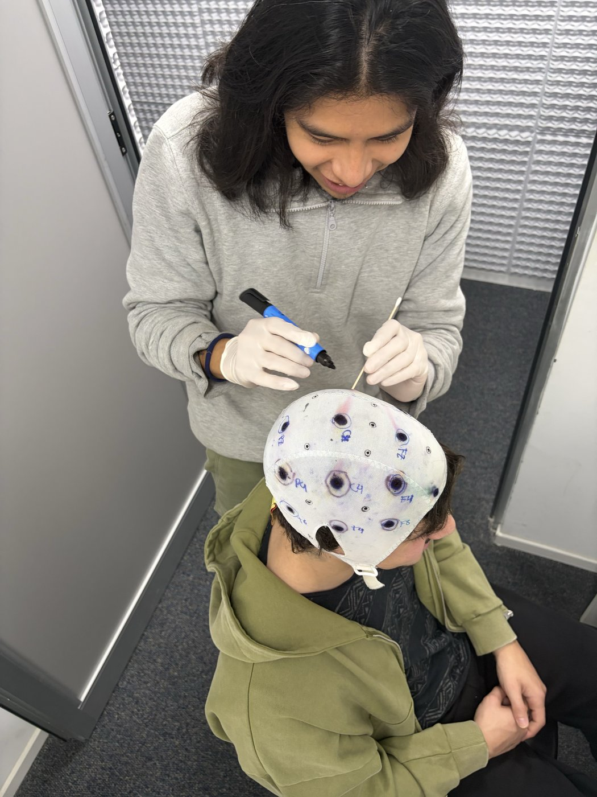
Procedimiento propio: colocación de electrodos. No es el EEG de sueño analizado.
Registro del procedimiento
El procedimiento, paso a paso
Montaje de polisomnografía reducida, preparación del sujeto y entorno de siesta.
1 · Colocación de electrodos (montaje central C3/C4, EOG, EMG).
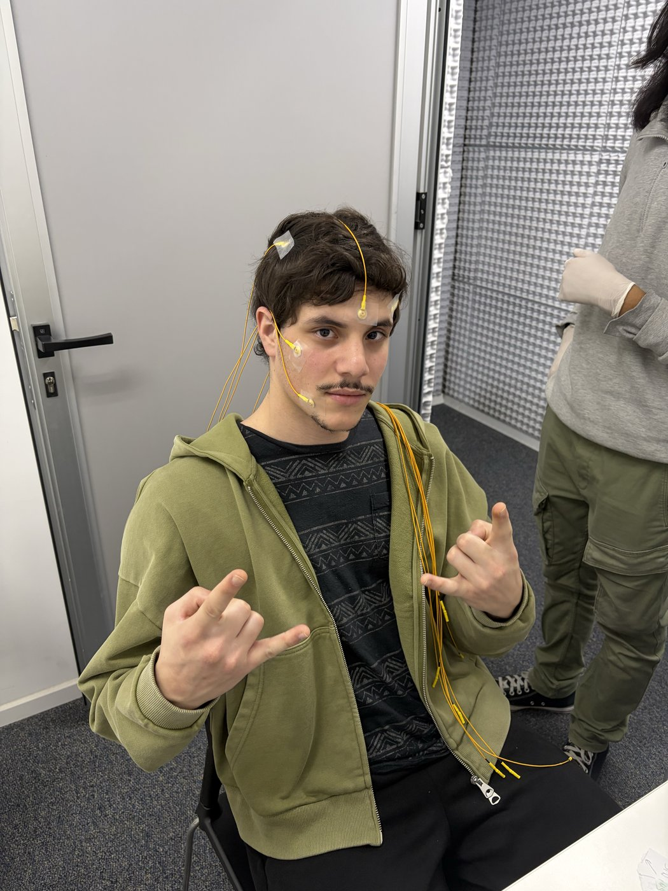
2 · Preparación del entorno antes de la siesta.
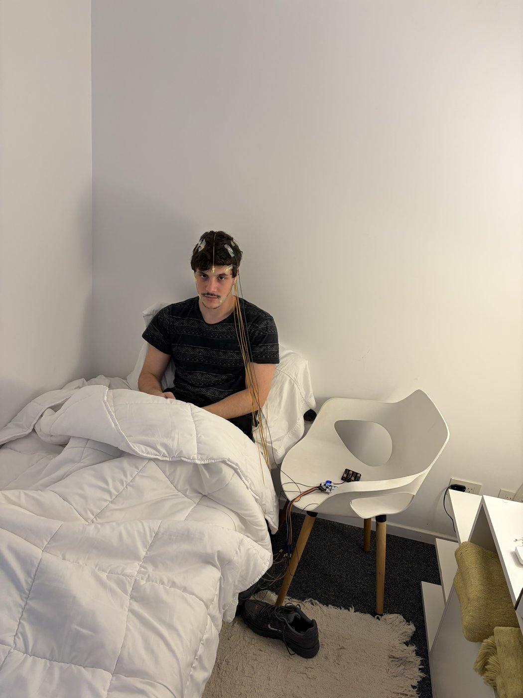
3 · Sujeto listo para iniciar el registro (OpenBCI propio).
Polisomnografía estándar = EEG + EOG + EMG (electrooculograma y electromiograma de mentón).
El mecanismo de la consolidación
Consolidación activa de sistemas durante el NREM
Ondas lentas
delta · SWS
→
Husos
sigma · 12–15 Hz
→
Ripples
hipocampales
⟹
Consolidación activa
Diálogo hipocampo–cortical: el acople de estos tres ritmos reactiva memorias dependientes del hipocampo y favorece su integración en la neocorteza.
Husos / sigma
Ritmos talamocorticales; se emplean como proxy de husos, sin detección formal.
Homeostasis sináptica
El sueño mejora la relación señal/ruido mediante el reajuste sináptico (downscaling).
Dos análisis complementarios
Métodos: conducta para memoria, EEG para fisiología
Tarea de palabras
20 asociaciones palabra rara–definición.
TR (línea de base) y TS (test final).
Dos puntajes: palabra objetivo (forma exacta) y definición (semántico).
Recuperar la forma exacta de una pseudopalabra es más exigente que su significado: separa la dificultad de la tarea.
EEG secundario (MNE)
BrainVision, 10 canales, 250 Hz.
Filtros antes del análisis: notch 50 Hz + pasa banda 0.3–35 Hz.
Épocas de 30 s alineadas 1:1 al scoring.
Decisión crítica C4 se descartó por artefactos; el análisis espectral se reporta sobre C3, que pasó el control de calidad.
Resultado conductual
Resultado conductual: mayor desempeño en sueño sobre una base elevada
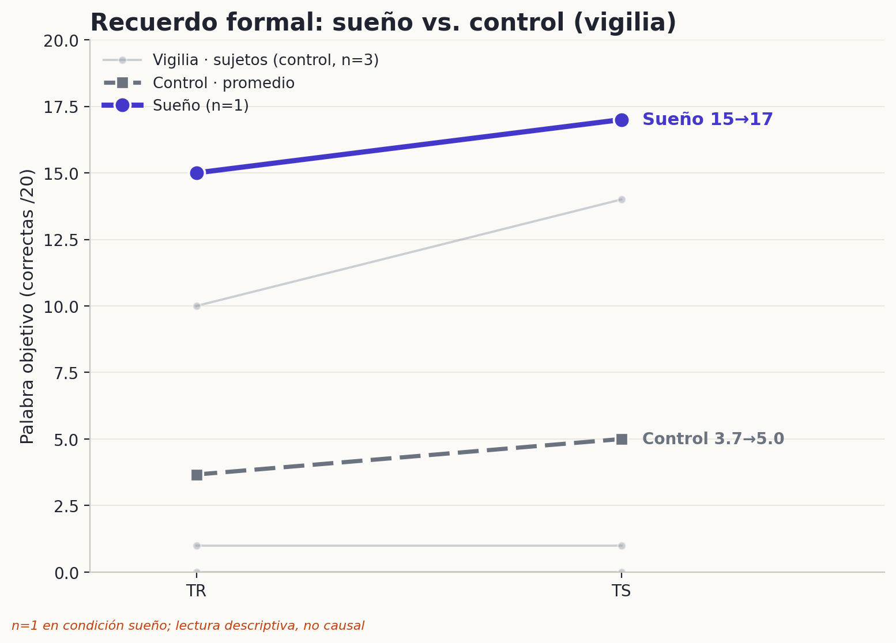
Resultado principal
Condición de sueño: 15/20 en TR y 17/20 en TS.
Interpretación descriptiva
Desempeño final alto e incremento de +2: compatible con la hipótesis.
Limitaciones
No establece causalidad: n = 1, línea de base elevada y un sujeto en vigilia con mayor incremento (+4).
Resultado conductual · detalle
Desempeño por sujeto y por métrica
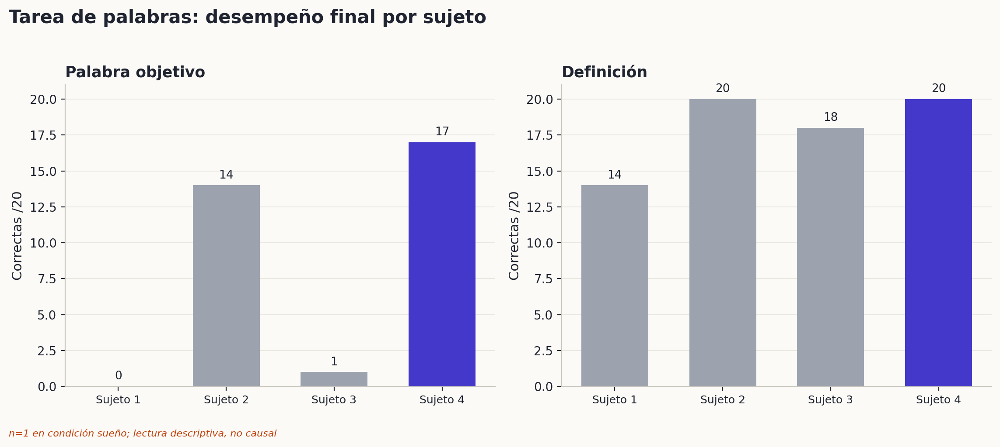
Dos métricas
Palabra objetivo: coincidencia formal exacta de la pseudopalabra (exigente). Definición: scoring semántico, próximo al techo en todos los sujetos.
Lectura
La métrica semántica no discrimina condiciones (efecto techo); la señal recae en la palabra objetivo, con n = 4 y elevada heterogeneidad.
Preprocesamiento y control de calidad
EEG: preprocesamiento y control de calidad por canal
1 · Lectura BrainVision con MNE
2 · Notch 50 Hz + pasa banda 0.3–35 Hz
3 · Épocas de 30 s alineadas al scoring
4 · Control de calidad: C3 usado, C4 descartado
Canal
std (µV)
Saturación
Decisión
C3
28
0 %
usar
C4
513
0.71 %
descartar
Justificación El promedio con C4 contaminaba el espectro (desviación 18× mayor). La señal fisiológica se interpreta sobre C3.
Codificación de fases (clave de la cátedra)
Estadificación del sueño: el registro alcanzó S4
Código
Fase (clave cátedra)
Épocas
0
Vigilia / transición
22
1
S1 — sueño liviano
28
2
S3 — sueño profundo
65
3
S4 — el más profundo (SWS)
44
Códigos 4 (—), 5 (REM) y 8 (MT) no aparecen en el registro: no hubo REM ni movement time.
Qué implica Solo la columna 1 del .txt; 159 épocas de 30 s = 79.5 min útiles. Descenso NREM hasta SWS profundo (S3+S4 = 68.6 % del registro).
Sobre la codificación La clave de la cátedra no codifica S2 por separado y rotula 2=S3, 3=S4. Se emplea tal cual; en consecuencia, se evita afirmar la detección de husos de N2.
Arquitectura del sueño
Hipnograma: un descenso NREM sostenido hasta S4
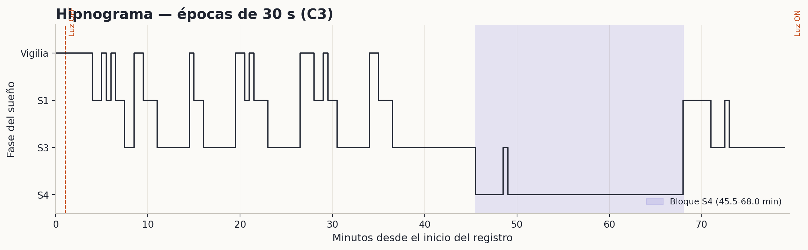
4 min
Latencia de sueño
45.5 min
Latencia a S4 (más profundo)
45.5–68 min
Bloque de sueño profundo sostenido
No
REM no observado
Distribución de fases
Predomina el NREM, con casi 28 % en el sueño más profundo
La delta aumenta con la profundidad; la sigma se concentra en NREM
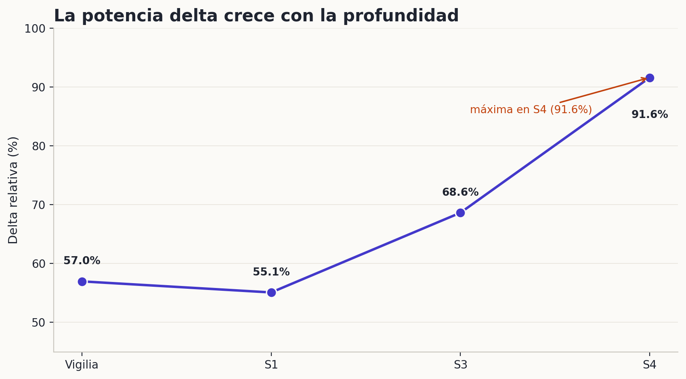
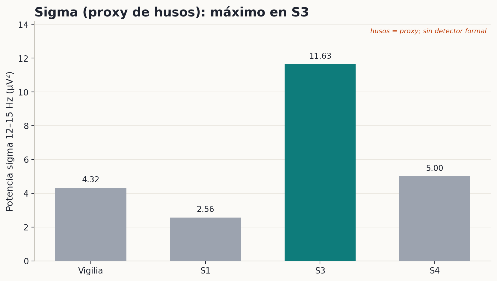
Interpretación La delta relativa asciende hasta 91.6 % en S4. La sigma (proxy de husos) es máxima en S3 y se reporta como potencia de banda, no como detección formal de husos. Los husos talamocorticales son, teóricamente, típicos de N2; esta clave de estadificación no codifica un N2 separado.
Ondas sintetizadas desde la potencia medida
Morfología del EEG según la fase
Cada traza se sintetiza a partir de la potencia de banda real (C3) de la fase: a mayor potencia delta, ondas más lentas y de mayor amplitud.
Vigilia
Actividad mixta, rápida y de baja amplitud (alfa/beta presentes).
S1
Transición: amplitud baja y enlentecimiento (theta).
S3
Ondas lentas con husos (sigma) superpuestos — corresponde al máximo de sigma registrado.
S4
Ondas lentas (delta) de gran amplitud que dominan el trazado.
Trazas ilustrativas reconstruidas desde la potencia de banda por fase; no es el registro crudo. Husos = proxy de sigma, sin detección formal.
Análisis tiempo–frecuencia
Espectrograma de C3 con hipnograma alineado
La distribución de potencia a lo largo del registro confirma el predominio de la actividad lenta en el bloque de sueño profundo.
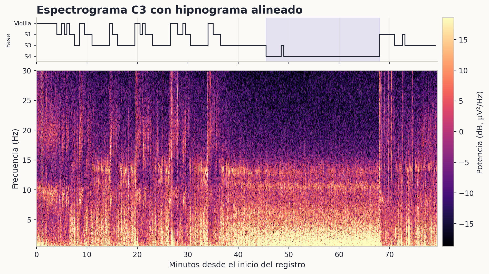
Lectura
La banda lenta (0.5–4 Hz) concentra su potencia en el bloque profundo S3/S4 (~45–68 min); la actividad rápida se atenúa con la profundidad.
Alcance Representación descriptiva sobre C3; la potencia sigma se reporta como proxy de husos, sin detección formal.
Análisis espectral · detalle
Densidad espectral y composición de bandas
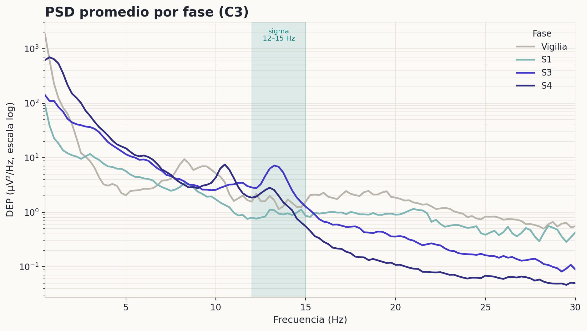
Densidad espectral de potencia (Welch) por fase, canal C3. La banda sigma (12–15 Hz) aparece sombreada.
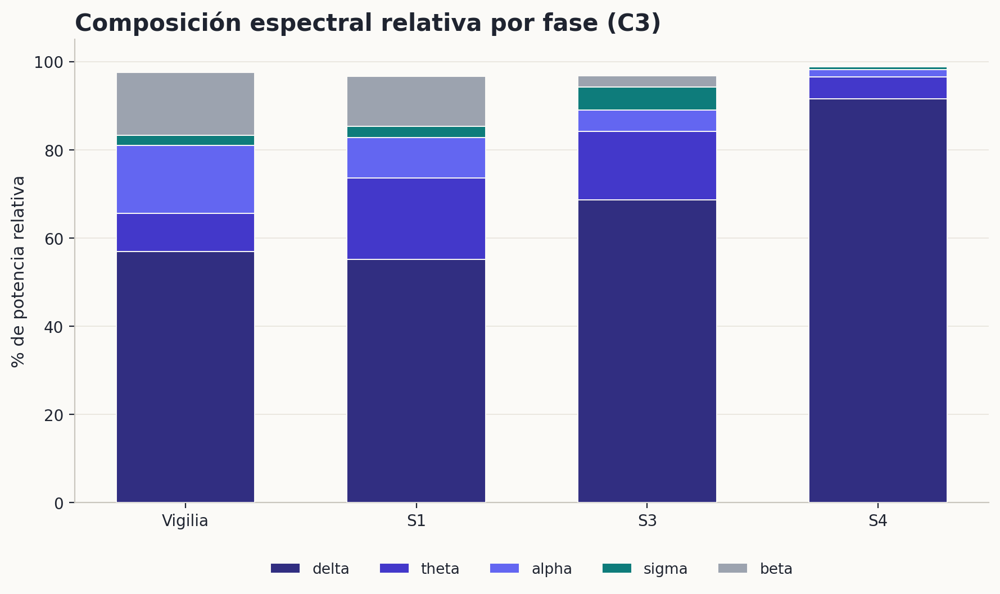
Composición espectral relativa por fase: el predominio de delta aumenta con la profundidad.
Ficha técnica
Parámetros del análisis EEG
EEG
BrainVision, 10 canales, 250 Hz.
Canal usado C3; C4 descartado por artefactos.
Notch 50 Hz + pasa banda 0.3–35 Hz (FIR).
159 épocas de 30 s, sin solapamiento (columna 1 del scoring).
Fases observadas: Vigilia, S1, S3, S4 (clave cátedra; sin REM ni MT).
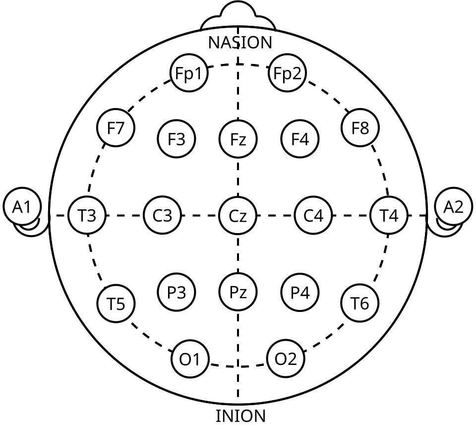
Sistema internacional 10–20 de colocación de electrodos. Fuente: Tomaton124, dominio público, vía Wikimedia Commons.
Alcance de las conclusiones
Conclusiones sostenibles y no sostenibles
Lo que los datos permiten afirmar
El EEG muestra NREM con sueño profundo S3/S4.
Delta máxima en S4 y sigma elevada en NREM.
El patrón fisiológico es compatible con ritmos de consolidación.
Lo que los datos no permiten afirmar
Que la sigma de este EEG explique la memoria de esos sujetos.
Que haya prueba estadística o causal fuerte.
Que la sigma sea un huso confirmado (sin detector formal).
La relación memoria–EEG se presenta como integración teórica, no como correlación directa.
Discusión de factores contextuales
Factores que pudieron impedir la conciliación del sueño
Proceso C / cronotipo
Siesta ~16:00: posible contrafase circadiana individual.
Cafeína
Antagoniza adenosina (Proceso S); podría elevar la latencia.
Estrés
Activación simpática/HPA y cortisol dificultan conciliar.
Pantallas / luz
La luz puede retrasar la fase circadiana.
Ambiente y dispositivo: dormir en laboratorio, con electrodos, aumenta incomodidad y vigilancia. Variables plausibles, no causas confirmadas.
Contexto de la siesta experimental (sujeto propio, OpenBCI).
Un modulador clave: el cortisol
Estrés, eje HPA y consolidación
Cómo un evento estresante previo al sueño podría degradar la consolidación — pregunta explícita de la consigna.
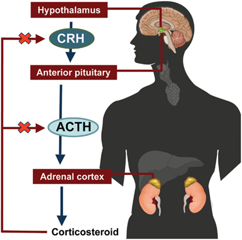
Eje HPA: Hipotálamo → CRH → Hipófisis → ACTH → Corteza suprarrenal → Cortisol, con retroalimentación negativa. Imagen: Shana Cannella, CC BY 3.0, vía Wikimedia Commons.
La cascada
El estrés activa el eje: el hipotálamo libera CRH; la hipófisis, ACTH; y la corteza suprarrenal, cortisol, que ejerce retroalimentación negativa sobre el sistema.
Efecto sobre la memoria
El cortisol elevado durante el SWS temprano perjudica la consolidación declarativa dependiente del hipocampo (Plihal & Born).
En este trabajo Un evento estresante previo a la siesta elevaría el cortisol, dificultaría la conciliación y degradaría el sueño profundo y los husos que sostienen la consolidación.
Respuesta directa a la pregunta inicial
Conclusión
Compatible con la hipótesis; no es una demostración causal.
Apoyo descriptivo
Condición de sueño: mayor desempeño final. EEG secundario: NREM con sueño profundo S3/S4 y sigma elevada.
Requisitos para una afirmación más sólida
Mismo sujeto con memoria + EEG, mayor n, control de moduladores y un detector formal de husos.
El sueño se asocia a la consolidación de la memoria declarativa; la afirmación se sostiene con las reservas que los datos imponen.
Sueño, memoria y señales fisiológicas
Gracias
¿Preguntas?
Keoni Dubovitsky · Joaquín Pelufo · Sergio Tenoch Sil Cruz
Trabajo práctico · Neurociencias del Desarrollo Productivo · 18/6/2026